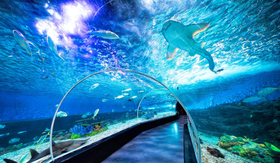

Best Nature & City Attractions in Luzon
| |
| Mayon Volcano |
| Take breathtaking photos of Mayon Volcano and wonder at the natural beauty that surrounds it.
The highly monitored active stratovolcano rises 2,463 m (8,081 ft) with hardened layers of pyroclastic
and lava flows from previous eruptions, and is known for its perfectly symmetrical cone shape. Since the initial blast in 1616,
there have been a total of 49 eruptions, so proceed with caution and pay attention to the directions. Adventurers can also visit
the nearby natural park to observe animal and plant life, or the skyline park to enjoy a stunning view of the Pacific Ocean from
an altitude of 820 meters (27,00 ft). Bring plenty of water, comfortable shoes, and a camera.
|
| Location: Albay, Bicol |
| Ratings: ★★★★★ |
| |
| Taal Volcano |
| Taal Volcano, which is part of the Pacific Ring of Fire, is one of the Philippines'
smallest but most active volcanoes, with 33 eruptions so far. The location, which was formed by prehistoric eruptions triggered by the
collision of two tectonic plates, serves as a research and prediction center for natural disasters. A freshwater sulfuric lake surrounded
by approximately 40 overlapping cones and craters can be seen inside the caldera. Explore the volcano's natural beauties and thermal zones,
and bring your swimwear if you want to take a quick dip in the lake.
|
| Location: Talisay and San Nicolas, Batangas |
| Ratings: ★★★★★ |
| |
| Sumaguing Cave |
| Sumaguing Cave, often known as "Big Cave," contains the largest chambers of
any cave in the vicinity. Take a guided walking tour or go spelunking to learn more about this natural wonder and its limestone formations.
However, if you are afraid of heights or cramped places, this attraction may not be for you.
|
| Location: Sagada, Mountain Province |
| Ratings: ★★★★☆ |
| |
| Hundred Islands |
| At Hundred Islands, you can go on the ultimate island-hopping trip.
In fact, this national park consists of 124 islands (123 at high tide), with only three of them being developed for tourists.
Snorkeling, cave diving, helmet diving, ziplining, camping, and many more activities are available on the islands. During your journey,
you'll see islands of various sizes and shapes, some of which are entirely covered in lush jungle and others which have complicated cave
systems waiting to be explored. Hike across rocky terrain for amazing views on some of the larger islands, then take a swim in the crystal
blue waters to see an underwater world teaming with coral and unique wildlife.
|
| Location: Alaminos, Pangasinan |
| Ratings: ★★★★★ |
| |
| Mount Pinatubo |
| Mount Pinatubo is one of the world's largest and most destructive volcanic eruptions
in the twentieth century. It casts a formidable silhouette over the Cabusilan mountain skyline. Known worldwide for its June 1991 eruption,
the once devastated, debris-covered landscape now flourishes with new life, surrounded with valleys home to the indigenous Aeta tribe. Hike along
5.5 km (3.4 mi) of relatively flat trail through dramatic scenery to see the aquamarine hues of the crater lake, a shimmering gem at the foot of
the active volcano. Bring plenty of water and a light picnic to enjoy by the lake’s edge, and consider hiring a guide to accompany you on the walk.
|
| Location: Tripoint boundary of Zambales, Tarlac, and Pampanga |
| Ratings: ★★★★★ |
| |
| Puerto Princesa Subterranean River National Park |
| One charming treasure of Palawan that genuinely stands out is the Puerto Princesa Subterranean
River National Park. It is one of the longest underground streams within the world that surges specifically to the ocean, traveling five miles through
an underground cave framework. Inside the Puerto Princesa Underground Stream, you'll see karsts—natural shake arrangements made by dissolving limestone—loom in each heading.
|
| Location: Puerto Princesa, Palawan |
| Ratings: ★★★★★ |
| |
| Hidden Beach |
| The Hidden Beach in El Nido, Palawan hides behind tall natural stone walls, with only a tiny break from which
to enter and exit. Its fine white sand, clear waters, and rugged appearance, giving it a raw appeal is perfect for swimming, relaxing, and picture-taking. If you’re
looking for a beach, this is the best tourist spot in Luzon to see.
|
| Location: El Nido, Palawan |
| Ratings: ★★★★★ |
| |
| Banaue Rice Terraces |
| One of the places to visit in Luzon that will take your breath absent is Banaue Rice Terraces.
It is locally known as the Hagdan-Hagdang Palayan. It is without a doubt a source of pride not just for the Ifugaos but also for Filipinos over the world.
Because of its magnificence, it has been recorded on the UNESCO World Heritage List in 1995.
|
| Location: Nueva Vizcaya, Banaue, Ifugao |
| Ratings: ★★★★★ |
| |
| La Paz Sand Dunes |
| La Paz Sand Dunes is a unique attraction located at the city of Laoag for being a sandy coastal desert
with an area of 85 square kilometers. This is considered to be a National Geological Monument because of its uniqueness being a desert environment. La Paz is
just a part of a long stretch of the Ilocos Norte Sand Dunes. It spans from Currimao to Pasuquin. You can try sand-boarding on the ridges, or enjoy a nice walk
along the dunes and coastline of deep blue sea.
|
| Location: Laoag, Ilocos Norte |
| Ratings: ★★★★★ |
| |
| Minalungao National Park |
| Established in 1967 to protect and preserve the scenic Penaranda River and its surroundings,
Minalungao National Park is home to some of the most beautiful and pristine nature in Central Luzon. Here, you can go swimming or kayaking on the river–or even
rafting and cliff diving. Its range of outdoor activities will absolutely keep you entertained for days, the scenery is stunning, and the emerald waters of the
river are beautifully framed by glimmering limestone formations looming above it.
|
| Location: General Tinio, Nueva Ecija |
| Ratings: ★★★★★ |
| |
| Fort Santiago |
| Fort Santiago was a fortress built by the Spanish government as part of Intramuros during the colonization
of Manila in the late 1500s. It was used as a storage facility for ammunition before being turned into a jail cell for activists and political dissidents including
Dr. Jose Rizal. The fort includes a replica of Rizal’s cell as well as the courtroom where his trial was held. During World War II, the Japanese held soldiers and
political detainees in the dungeons of Fort Santiago Intramuros to torture and execute them. The dungeons can also be visited to explore more about the fort.
|
| Location: Intramuros, Manila |
| Ratings: ★★★★☆ |
 |
| Manila Cathedral |
| The Mother of all Philippine Churches, Cathedrals, and Basilicas. The Manila Cathedral-Basilica is the Philippines'
Premier Church because it was chosen as the Cathedral from among all the churches in the archipelago in 1581, when the Philippines was detached from the Archdiocese of
Mexico and established as an independent diocese with its episcopal seat in Manila. It was founded in 1571 by the secular priest Juan de Vivero as the Church of Manila,
under the patronage of Mary, La Purissima e Inmaculada Concepcion. Its structure is a masterpiece in architecture. Every intricate wall carving, door, panel, doorway,
and even the beautiful stained glass has a story to tell.
|
| Location: Intramuros, Manila |
| Ratings: ★★★★☆ |
| |
| Las Casas Filipinas de Acuzar |
| Las Casas Filipinas is a historic resort and event venue because of its collection of restored Spanish-Filipino houses.
It shows the beautiful architectures and interior designs during the Spanish era. It contains around 40 restored historical structures made up of different materials ranging
from wood and stone. Each of these structures were obtained from different places and are carefully transported and reconstructed at this place. It is a wonderful site to
explore for people who enjoys architecture.
|
| Location: Bagac, Bataan |
| Ratings: ★★★★★ |
| |
| Calle Crisologo |
| Calle Crisologo is a well-preserved Spanish-Era Street that consists of heritage houses with beautiful architectures.
It was historically the business and trade center of North Luzon during the pre-colonial and Spanish colonial Philippines and where most of the residents were affluent
Filipino-Chinese traders and merchants. Visit this wonderful place if you want to feel like you’re in the Spanish-Era and don’t forget to try their famous food such as
their empanadas and longganisas.
|
| Location: Vigan, Ilocos Sur |
| Ratings: ★★★★★ |
| |
| National Museum |
The National Museum is a government-owned educational, scientific, and cultural institution that acquires, documents, preserves,
exhibits, and promotes scholarly study and public appreciation of works of art, specimens, and cultural and historical artifacts that represent the Philippines' unique cultural heritage
and natural history. The National Museum is separated into 4 sections: Fine Arts, Anthropology, Natural History, and Planetarium. Explore each of the museums and discover more about
the history and culture of the Philippines.
Entrance fee: Free
|
| Location: Ermita, Manila |
| Ratings: ★★★★★ |
| |
| Enchanted Kingdom |
Enchanted Kingdom is a famous amusement park in the Philippines. There are about 30 rides to try and lots of attractions
to see. This 25-hectare theme park has been entertaining guests of all ages since it first opened its doors in 1995, with thrilling attractions, interactive entertainment,
and exhilarating activities.
Entrance fee:
P999 REGULAR DAY PASS
P688 SENIOR CITIZEN | PWD
P688 JUNIOR DAY PASS between 3 ft or 91 cm to 4ft or 122cm tall
P488 JUNIOR PWD
Children below 36" (3 ft or 91 cm) may enter the Park for FREE
|
| Location: Santa Rosa, Laguna |
| Ratings: ★★★★★ |
| |
| Rizal Park |
| This place holds an important piece of history because this is where Jose Rizal’s execution was held during
the Spanish Colonization. The Rizal Monument is guarded by guards in full regalia and is fronted by a 46-meter flagpole, contains the hero's mortal remains and
serves as a symbol of Filipino nationhood. You can also visit the exact place where Rizal was executed. It is a 58-hectare park perfect for strolling or relaxing
in the late afternoon, early evening, or on weekends. You can also visit the National Museum within this park.
|
| Location: Ermita, Manila |
| Ratings: ★★★★☆ |
|  |
| Manila Ocean Park |
| Manila Ocean Park is both a world-class marine theme park and a prominent educational center in the Philippines.
It shelters a wide variety of marine species to see and interact with such as the sea lion show. Each attraction or experience has a fee, and you can buy tickets
for individual attractions or experiences or choose packages that combine many attractions and experiences, depending on your interests. Because bundles can sell
out quickly, buy them early in the day or ahead of time.
|
| Location: Ermita, Manila |
| Ratings: ★★★★★ |
| |
| Venice Grand Canal Mall |
| The Venice Grand Canal Mall is an open-air mall with premium shops, fitness/beauty services, and restaurants
in a Venice-inspired setting. It is well known place because it offers a great experience just by its beauty. You may also try different cuisines from the available
restaurants in this mall such as Italian, American, Filipino, and more.
|
| Location: McKinley Hill, Taguig |
| Ratings: ★★★★★ |
| |
| Chinatown |
| The Chinatown in Binondo, Manila is considered as the world’s first and oldest Chinatown. Binondo was founded
in 1594 by Governor and Captain-General of the Philippines Luis Pérez Dasmariñas as a permanent settlement for Chinese immigrants, especially those who had converted
to Catholicism and intermarried with Filipinos. Binondo is a popular district for newcomers to Manila, it mainly offers a wide variety of authentic Chinese cuisine
that you shouldn’t miss. And don’t forget to visit the Binondo Church which is one of the oldest church in the Philippines.
|
| Location: Binondo, Manila |
| Ratings: ★★★★★ |
References
https://www.inspirock.com/philippines/natural-attractions-in-luzon • https://www.zenrooms.com/blog/post/luzon-tourist-spots/ • https://www.touropia.com/central-luzon-philippines/ • https://www.trip.com/travel-guide/city-1933/tourist-attractions/
 Lakbay
Lakbay